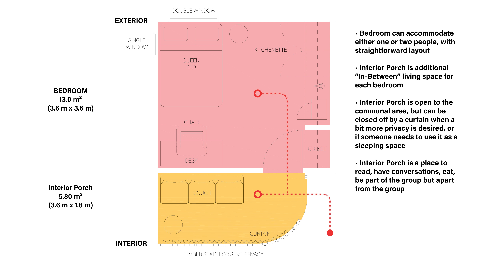
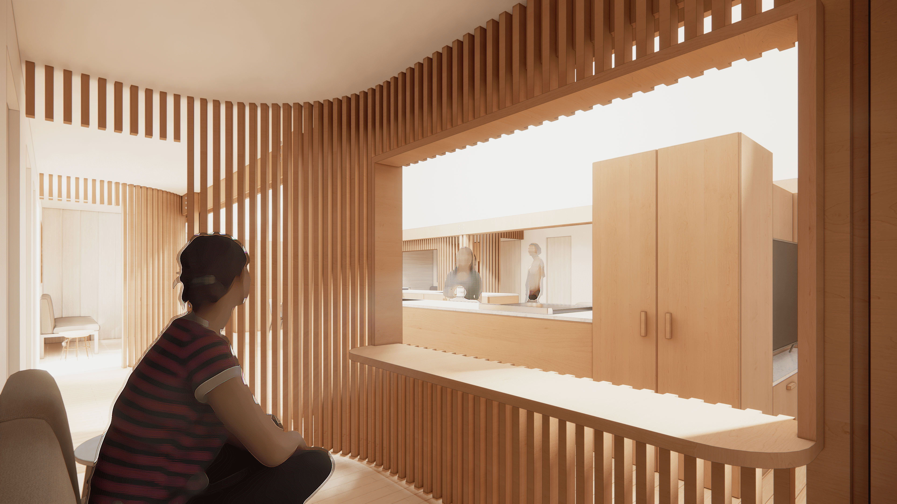
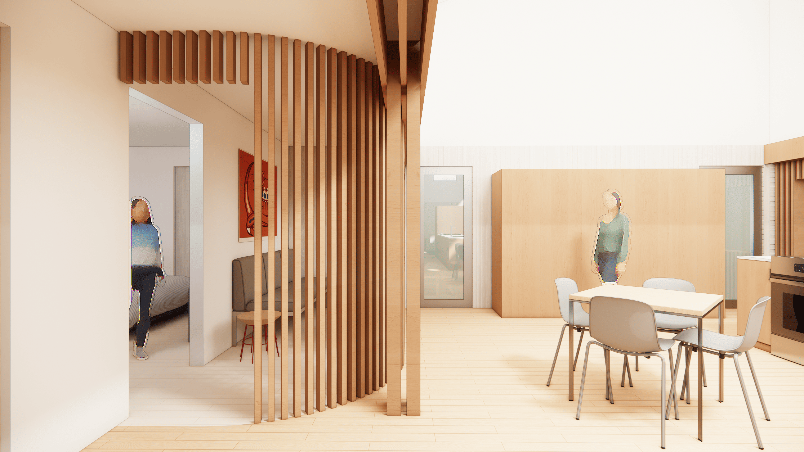

Nishnawbe Aski Nation Housing Lodge Prototype
title
Nishnawbe Aski Nation Housing Lodge Prototype
office
LGA Architectural Partners
supervisor
Dean Goodman, Noah Wadden
category
communities
+ Project Description
Role
I was brought onto this project to give the lodge a material and tectonic language through a series of facade studies. For this particular typology, a housing prototype for northern indigenous communities, the facade system had to be simple to build, and use locally available materials, such as milled wood shingles or typical board and batten. I also developed a series of design drawings that were displayed in the project’s second community engagement event.







1/12